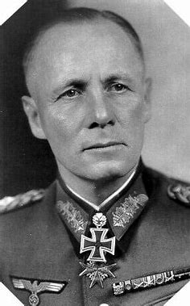

Né le 15 novembre 1891 et mort le 14 octobre 1944
Surnommé le Wüstenfuchs (« le Renard du Désert ») ; Un des seuls chefs militaires Allemands qui n’a pas impliqué dans des affaires de crimes de guerre ; Commandant de campagne, chef de propagande, général du 3e Reich, commandant de plusieurs division de l’armée Allemande lors des invasions, notamment en Afrique (d’où son surnom).